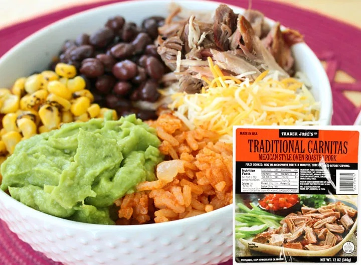

Quick and Easy: Trader Joe's Carnitas Burrito Bowl

Image: Carnitas Bowl from Eat This Not That at eatthis.com/quick-easy-meals-trader-joes/
This is one of my favorite meals for when I'm in a time crunch. Trader Joe's makes a delicious and easy carnitas that you only have to pop in the microwave for three minutes and then shred. After this, I use the Trader Joe's brown rice packs (you can also use white rice) which, once again, all you have to do is throw in the microwave for three minutes and it's done. After that, the topping are completely up to you. My favorite include:
romaine lettuce
chopped tomatoes
sour cream
avocado or guacamole
freshly squeezed lime
cilantro
The best part is that you get to be creative with the toppings choice. Trader Joe's has a great produce section so finding fresh toppings should not be difficult.
A complete list of ingredients include:
One package of Trader Joe's Fully Cooked Traditional Carnitas
One Pack of Trader Joe's Organic Brown Rice (you can also use their Organic Jasmine Rice
Any toppings you would like (see list above for inspiration
The process is super easy and can be completed in just five quick steps:
Prep any toppings you would like to add to the bowl
Microwave the Carnitas according to the package instructions (it should be three minutes total)
Once the Carnitas are done, microwave one pouch of rice according to the instructions on the box (this should also be three minutes)
While the rice is cooking, shred the carnitas by place two dinner forks with their backs facing each other into the meat then pull the forks inopposite directions, breaking up the meat as you pull.
Now, it's time to assemble the bowl. Begin by placing the desired amount of rice in your bowl, followed by the desired amount of carnitas, and finally add your toppings.
Now you have a delicious carnitas bowl in under 10 minutes! Enjoy!